Hege's portfolio
About me:
My name is Hege Stensland and I am a self learned developer. I am learning through the Codecademy front-end program + some youtube videos. So far, my favorite part of learning to code is css and styling. I love focusing on the small details! I am a social woman with lots of ideas and a good mood!
I like beeing out in nature; doing hikes, photographing, swimming, geocaching and kayaking. I also like to play games, both on computer and board games. At the moment, I am making my own board game and using midjourney for the graphic details. Under you can see some different thumbnails photos from what I have been making with midjourney for my game.
My name is Hege Stensland and I am a self learned developer. I am learning through the Codecademy front-end program + some youtube videos. So far, my favorite part of learning to code is css and styling. I love focusing on the small details! I am a social woman with lots of ideas and a good mood!
I like beeing out in nature; doing hikes, photographing, swimming, geocaching and kayaking. I also like to play games, both on computer and board games. At the moment, I am making my own board game and using midjourney for the graphic details. Under you can see some different thumbnails photos from what I have been making with midjourney for my game.
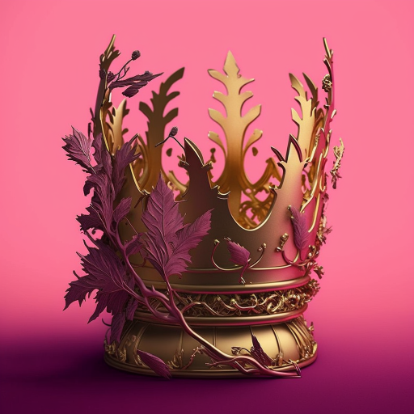
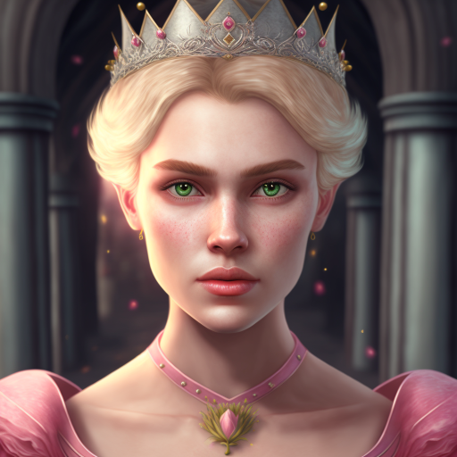
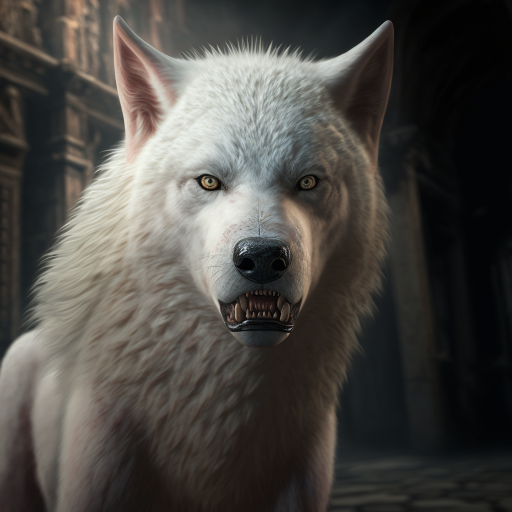
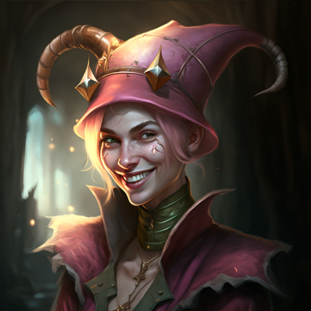
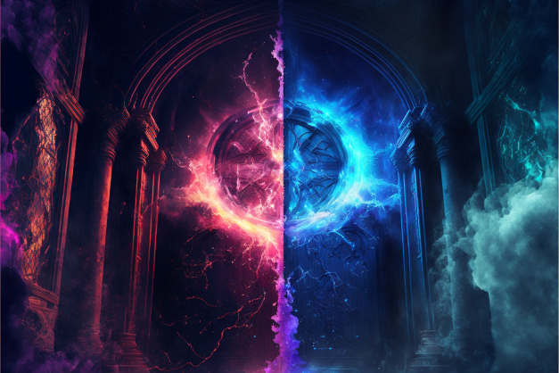
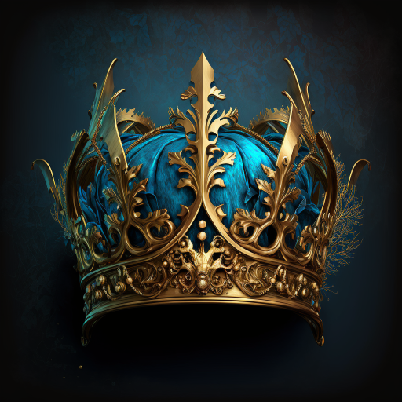
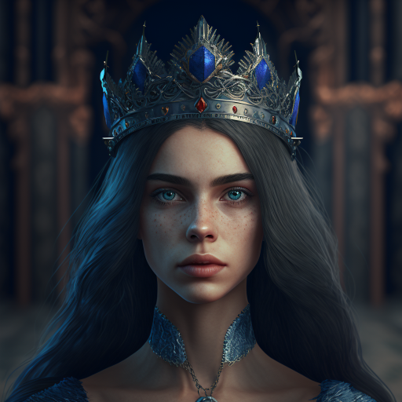
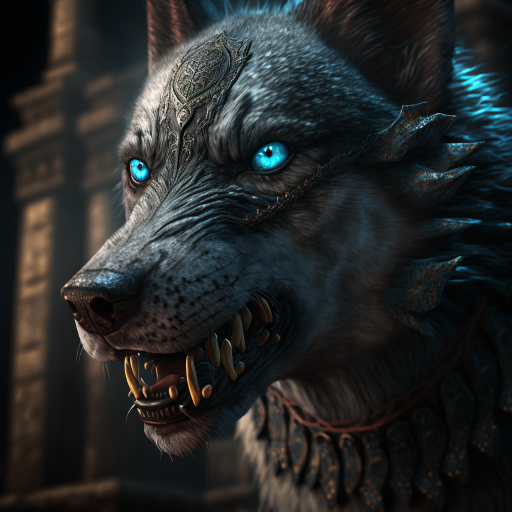
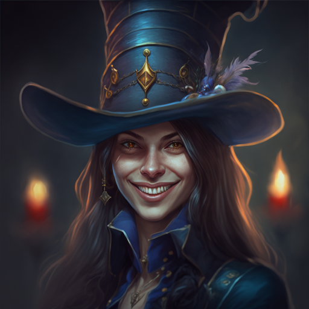
I love photographing, and I do it in every season of the year! Here you can see some of the photos I have taken. Click on them for some more.
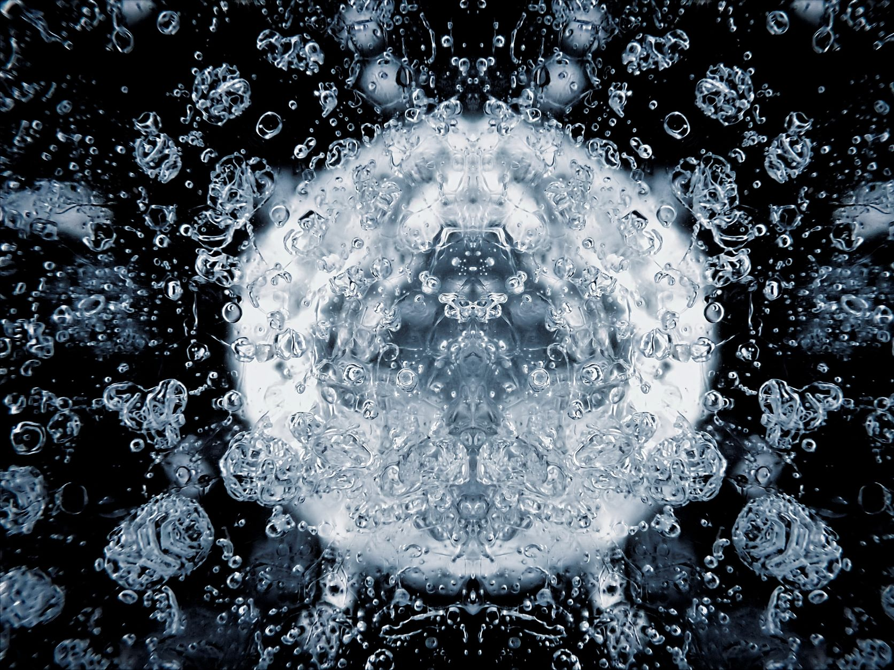
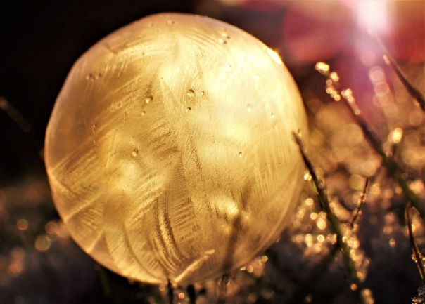
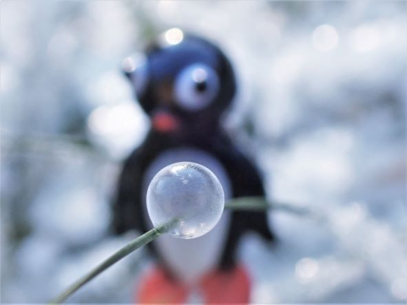
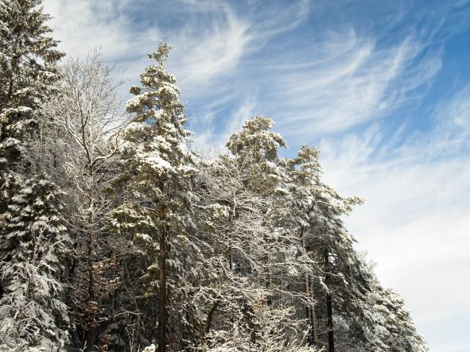
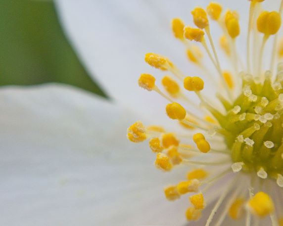
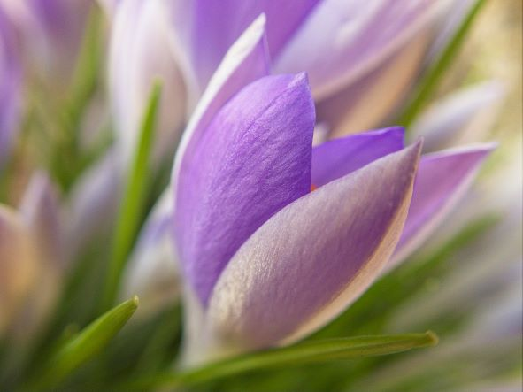
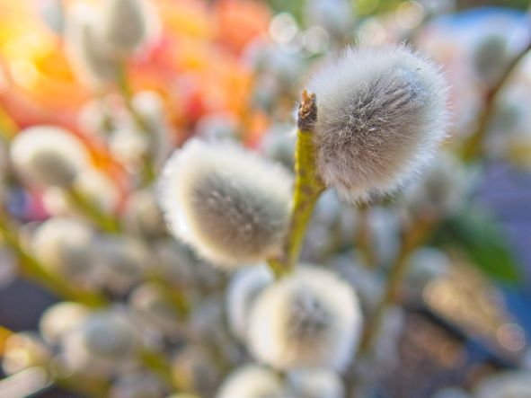
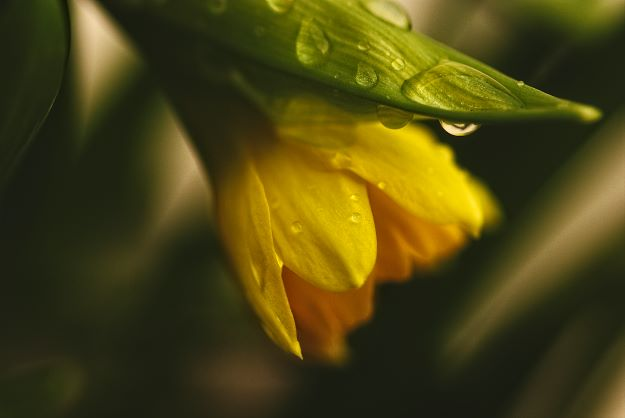
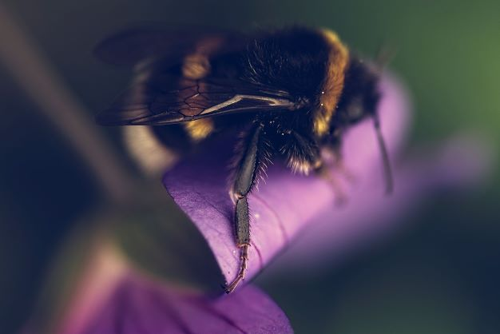
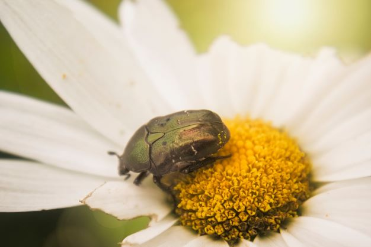
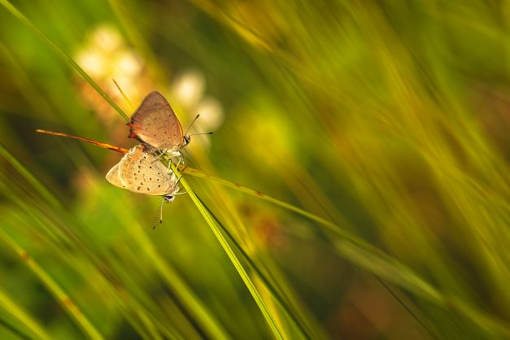
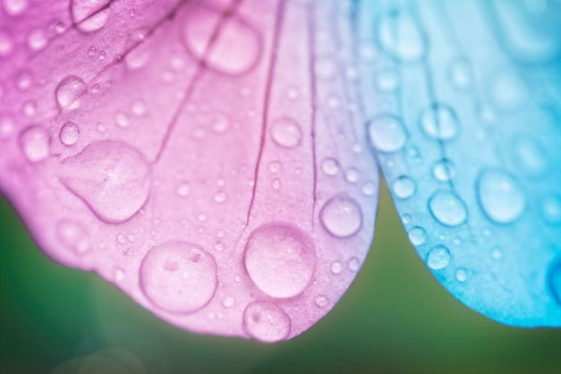
 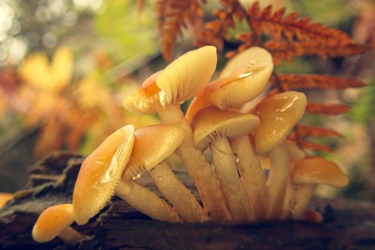
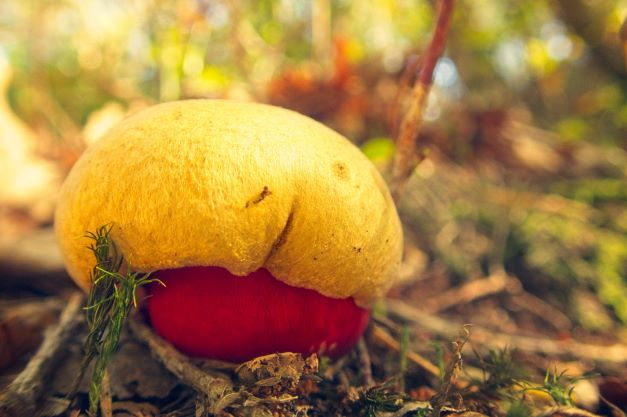
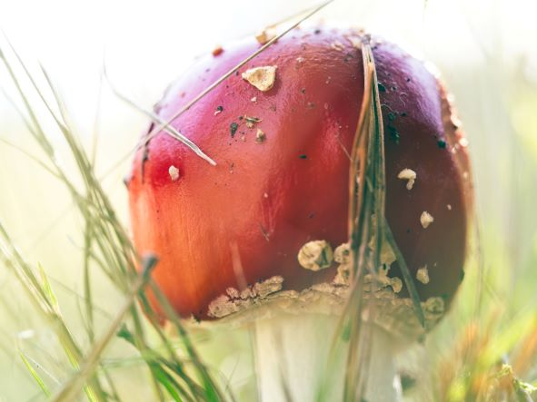
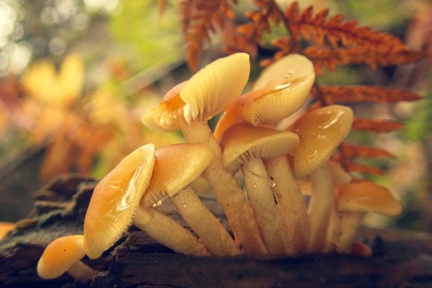
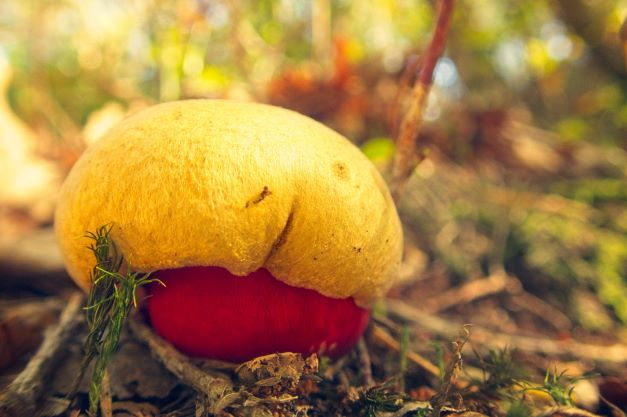
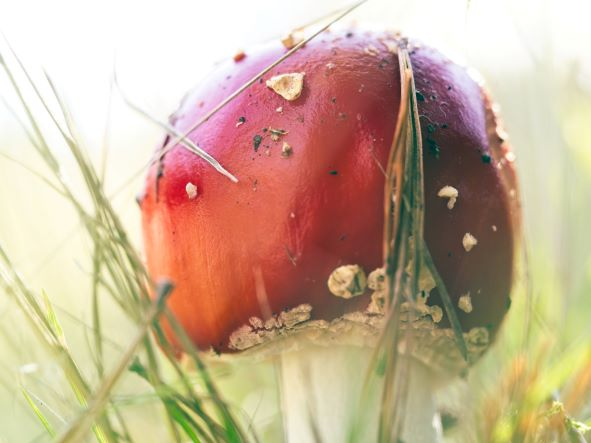
- Skills:
- HTML
- CSS
- JavaScript
- Git
- GitHub